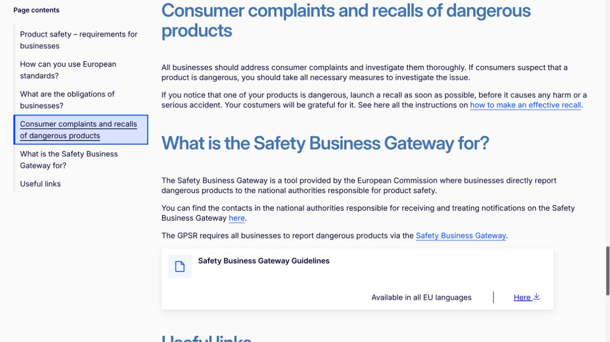

Safety Gate hands-on: turning 82 e-bike alerts into a pre-shipment checklist
A live “electric bicycle” search in EU Safety Gate, compared with UK OPSS and U.S. CPSC cases, turns fire, injury, electric-shock and documentation signals into practical product and pre-shipment checks for e-bike traders.
Test method: use recall databases as a library of risk signals
On November 25, 2026, we entered “electric bicycle” in the public EU Safety Gate Alerts search, left the other filters blank and kept the newest-alert sort. The page returned 82 results. That count can change as alerts are added, corrected or indexed differently, so it records the test-day interface rather than an incident rate or brand-quality ranking.
A recall database does not tell buyers which products are absolutely safe. It shows failure modes, identification fields, hazards, evidence gaps and corrective actions already observed by authorities. No search result for a model is not a certificate; market access still requires an assessment of the exact configuration against applicable law and standards.
The first results already show three signals: injury, fire and electric shock
The first results included injury risks for complete e-bikes, fire risks for complete e-bikes, and electric-shock or fire risks for chargers. This is a reminder that product review cannot stop at cell brands and battery reports: frames and welds, braking and control logic, fasteners, chargers, electrical protection, instructions and labels can all become entry points for risk.
Do not merely bookmark an alert. Capture the product, model or batch, risk type, failure description, measure, notifying country, publication date and original link, then map each signal to the relevant SKU, component and verification record in your own range.

Two independent cases: documentation and production consistency both matter
A 2025 UK OPSS safety report for an unbranded electric bicycle identified no valid technical documentation, no evidence of production control, and missing labelling, marking and instructions. With no evidence demonstrating conformity of the bicycle, battery and charger, the import was rejected at the border. A report therefore has to connect to the actual product, BOM, production batch and accompanying information.
A 2024 U.S. CPSC recall for Pacific Cycle e-bikes identified an improperly assembled wiring harness that managed battery charging, creating an overheating and fire risk during charging. This exposes a different gap: even when a design file exists, assembly controls, first-piece checks, harness routing, connector locking and final inspection can determine the real outcome. Together, the cases support a dual check of design-and-document evidence plus production-process evidence.
Connect external alerts to an internal loop instead of forwarding links
The European Commission's business-obligations page says businesses should investigate consumer complaints thoroughly. When a product may be dangerous, they should act immediately, inform the manufacturer or importer, launch or cooperate in a recall, and report through the Safety Business Gateway. Exact legal duties depend on role, product and jurisdiction and need qualified review, but the management principle is clear: external alerts, internal complaints and supplier anomalies belong in one escalation process.
Use a five-column risk register: external signal, possible failure mode, affected SKU or component, existing evidence and gaps, and owner plus due date. Close an item only as not relevant with evidence, evidence required, additional testing required, or shipment/sales paused for escalation—not because a supplier simply says there is no problem.

For e-bike traders: turn alerts into 12 pre-shipment checks
Product and electrical checks: verify the model and power/speed control behaviour; confirm versions of the frame, fork, brakes and safety-critical fasteners; identify exact part numbers for cells, BMS, pack, harnesses, connectors and charger; check charger-to-battery compatibility; inspect harness routing, retention, abrasion protection and connector locking; and include water ingress, short circuit, overcharge, over-temperature and reasonably foreseeable misuse in the risk assessment.
Documentation and traceability checks: confirm the tested sample matches the production BOM; review reports, declarations and standard editions; verify labels, warnings and instructions; link battery, charger and bicycle serial or lot identifiers; retain first-piece, in-process and final-inspection evidence; and define triggers for shipment stop, stock quarantine, dealer notification and end-customer contact. Qualified personnel should escalate any high-risk gap before shipment.
A sustainable 45-minute monthly alert review
Search official databases for each target market every month, using at least electric bicycle, e-bike, battery, charger and major-component terms. Only alerts relevant to current or planned SKUs enter the register. Quality, sourcing, product and after-sales teams then spend 45 minutes assigning relevance, evidence gaps and owners, with closure reviewed the next month.
Start with four measures: on-time review of new alerts, SKUs needing additional evidence, overdue corrective actions, and time from confirmed risk to shipment stop or stock quarantine. Recall databases do not replace testing, conformity assessment or legal advice, but they supply continuing real-world failure signals and turn “we have never had a problem” into “we can show what we checked.”